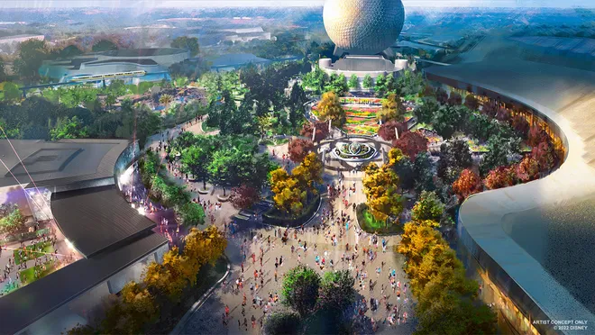

Parques de Disney en EEUU:
Magic Kingdom
Magic Kingdom es el parque más icónico de Walt Disney World, ubicado en Orlando, Florida. Inaugurado en 1971, representa la esencia del universo Disney y está diseñado como un lugar donde los cuentos de hadas cobran vida. Su símbolo principal es el imponente Castillo de Cenicienta, visible desde casi cualquier punto del parque y centro alrededor del cual se organizan sus diferentes áreas temáticas.
Magic Kingdom combina atracciones emocionantes como Space Mountain o Big Thunder Mountain con experiencias más tranquilas y mágicas, ideales para los más chicos, como el vuelo con Peter Pan o el viaje por el mundo en “It’s a Small World”. También es famoso por sus desfiles de personajes, shows en vivo y fuegos artificiales nocturnos sobre el castillo, que ofrecen una experiencia inolvidable para todas las edades.
Epcot
EPCOT, también ubicado en Walt Disney World en Orlando, es un parque temático único que combina tecnología, innovación, cultura y entretenimiento. Su nombre original, Experimental Prototype Community of Tomorrow, refleja la visión futurista de Walt Disney, quien imaginó un lugar dedicado al progreso humano y la colaboración internacional.
Este parque tiene un enfoque más educativo y contemplativo que otros parques, pero también incluye entretenimiento de primer nivel, shows nocturnos con luces y fuegos artificiales, y espacios ideales para relajarse. En resumen, es una experiencia que mezcla lo mejor del conocimiento humano con la magia de Disney, ideal para quienes disfrutan tanto de la tecnología como de explorar otras culturas.
Disney’s Hollywood Studios
Disney’s Hollywood Studios, ubicado también en Walt Disney World (Orlando), es un parque temático dedicado al cine, la televisión y el entretenimiento. Desde que abrió sus puertas en 1989, su concepto ha evolucionado: pasó de ser un homenaje al proceso de filmación a convertirse en un parque totalmente inmersivo, donde los visitantes pueden sentirse dentro de sus películas y series favoritas.
El parque está dividido en varias zonas temáticas que recrean mundos cinematográficos con un nivel de detalle impresionante. Uno de sus mayores atractivos es Star Wars: Galaxy’s Edge, una área completamente ambientada en el universo de Star Wars, donde los visitantes pueden pilotear el Halcón Milenario o unirse a la Resistencia en una de las atracciones más avanzadas tecnológicamente, Rise of the Resistance. Otra zona muy popular es Toy Story Land, pensada para toda la familia, que recrea el patio de Andy con juegos gigantes y personajes entrañables como Woody y Buzz.
A diferencia de otros parques más orientados al cuento de hadas o la exploración cultural, Hollywood Studios ofrece una experiencia más intensa y cinematográfica, ideal para fanáticos del cine, la acción y las franquicias modernas. Es un lugar donde la adrenalina, la nostalgia y la magia del cine se combinan para ofrecer una jornada llena de emociones.
Disney’s Animal Kingdom
Disney’s Animal Kingdom, el parque más grande en extensión de Walt Disney World en Orlando, es una fusión entre zoológico, parque temático y santuario natural. Inaugurado en 1998, su objetivo es celebrar la vida animal —real e imaginaria— dentro del espíritu de conservación que promovía Walt Disney. Es un parque distinto al resto, más conectado con la naturaleza y centrado en la experiencia sensorial y educativa.
El ícono central del parque es el Árbol de la Vida, una escultura gigantesca con más de 300 animales tallados en su tronco, símbolo de la biodiversidad del planeta. El parque está dividido en varias áreas temáticas. En Africa, uno de sus sectores más populares, se encuentra el Kilimanjaro Safaris, una experiencia que permite ver animales reales en un entorno que simula la sabana africana. Muy cerca está Asia, donde podés explorar ruinas ficticias inspiradas en templos del Himalaya y subirte a Expedition Everest, una montaña rusa donde se enfrenta al legendario Yeti.